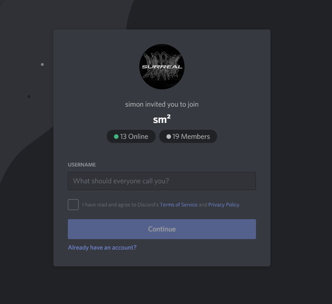

February 8, 2022 / By sass
100,000 MEMBERS… 100,000 FRIENDS
That’s it, we reached 100K members on our Discord server!
It has almost been one year day-for-day since the sm² we all know today has been in the works. It’s been quite a ride so far and we’d like to thank everybody who spent all that time with us.
A project such as this one is a massive responsibility; We WANT and we NEED to make this right, for the sake of everyone who put their trust on us and are willing to spend their time on this game. And with the project always growing in scope and in visibility, we always try to push ourselves in order to make the final product as enjoyable as it can be.
What started as a “somewhat simple” mod always evolves in something greater, and we always find more motivation when seeing you as hyped as we are. Seeing all the positivity and hope for the project always brings us joy, and we always make sure to remember and cherish every positive thing our ever-growing community has to offer.
We’re very thankful for every one of you who hoped in the train with us, because the community is what makes this game. We also want to give a special thanks to all the creators who went out of their way to shine their lights on the project, and are responsible for bringing all of us together.
We feel like the connection between the development team and our soon-to-be players is the most important thing, and is what makes this project unique: Made by the Community, for the Community.
None of this would have been possible without you all and all the motivation it gives us.
Thank you, on behalf of the entire sm² team.
.
.
.
> FINAL WEAPONS LIST REVEALED
As one of the many ways to thank you, we decided to publish the entire list of weapons that will be available on release – matter of fact, it’s been published for a few hours now!
Just like the rest of the content you’ll be able to experience, this list will grow as time goes on, thanks to our Seasonal update model. So if one of your favourite weapons didn’t make it yet, it might join the roster in the future!
You can find the updated and complete list in our “Confirmed Weapons List” article, which you can find here:
sm2.gg/weapons

.
.
.
> NEW MAPS SHOWCASE
We also wanted to take the time to show you three maps we kept under our sleeve for a special occasion: Hardhat (MW3), Gateway (MW3), and Shipment (COD4).
Every one of these maps went through a series of visual tweaks, in order to make them more vibrant and modernized!
You can watch this showcase from our YouTube channel, or from the link:
https://youtu.be/9NBsaQs1w6s
> INTRODUCING SIGNATURE VARIANTS
We’ve teased these a few times before, but it is now time to properly introduce them to you.
Signature Variants are purely cosmetic weapon blueprints with their own pre-set attachments that transform your weapon entirely. They offer the exact same stats as their base weapon, while giving it a new set of models and animations.
Besides adding bad-ass weapon models, one of our main motivations behind Signature Variants was to allow players to use different iterations of existing guns. We can’t include every iteration of the same weapon with full support, such as the AK47 which has been featured in a dozen of titles. But what we can do is add some of those versions as Signature Variants, so you won’t miss out on some of your favorite-looking weapons.
Signature Variants don’t support camos, and the attachments are locked to whatever the variant comes with. If your weapon has a Signature Variant, you can purchase it at any time from the Collections menu using Credits you earn while playing the game.
> FIRST YEAR AND BEYOND!
On the 19th of February, sm² will officially be a full year old!
It has been quite the journey since then, yet we’re always eager to see what the future of the project will be like. We really appreciate all of the support, whether it be from those who put their trust in us, those who covered our work and made this community, and all the hands that have been welcome on board since the very beginning. In return, we’ll make sure to keep you updated on features, news, showcases, community suggestions, and more.
Thank you,
The sm² team
